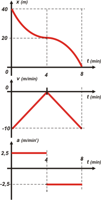

|  |
|
• La rapidez disminuye todo el tiempo durante
los primeros 8 minutos.
FALSA. La rapidez disminuye hasta el instante 4 min y luego aumenta.
• La fuerza resultante sobre el cuerpo es
constante. FALSO. Si cambia la aceleración, cambia la fuerza (2da. Ley de Newton).
• El cuerpo disminuye su rapidez durante los
primeros 4 min y luego invierte su sentido de movimiento,
moviéndose cada vez más rápido. FALSO, el cuerpo nunca invierte su sentido de movimiento, siempre retrocede.
• La fuerza resultante sobre el cuerpo cambia
de sentido en t = 4 minutos. VERDADERO. Tal como lo hace la aceleración. (2da. Ley de Newton).
• El cuerpo aumenta su rapidez durante los
primeros 4 minutos y luego frena hasta detenerse
en t = 8 minutos. No respondas... nos están cargando.
• En t = 4 min la velocidad cambia de sentido. Hay que ser mala persona... ¿no? |